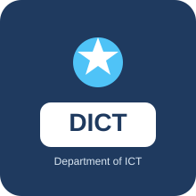

126
Інформаційні системи і технології

Ми спеціалізуємось на підготовці фахівців в області мережевих, програмних та інформаційних технологій за двома напрямками 172 - Електронні комунікації та радіотехніка і 126 - Інформаційні системи та технології.
Інформаційні системи і технології
Електронні комунікації та радіотехніка
Досвідчених викладачів
Навчальних дисциплін
Талановитих випускників
Унікального досвіду
Навчання на кафедрі допомогло мені отримати практичні знання та почати професійну кар'єру у сфері інформаційних технологій.
Випускник кафедри
Під час навчання я отримав можливість працювати над реальними проєктами та розвивати свої професійні навички.
Випускник кафедри
Наші студенти не просто вивчають теорію — вони беруть участь у реальних проєктах, розробляють ІТ-рішення, створюють стартапи та співпрацюють з компаніями-партнерами. На кафедрі діють наукові гуртки, лабораторії та ініціативи, де кожен може реалізувати себе ще під час навчання. Дослідження, що перетворюються на продукт — саме тут це можливо.
61070, Харків, вул. Вадима Манька, 17
НАУ ім. М.Є.Жуковського "ХАІ"
Кафедра інформаційно-комунікаційних технологій №504
Інформація про події, навчання, студентські проєкти та життя кафедри.
Актуальні новини кафедри інформаційно-комунікаційних технологій.